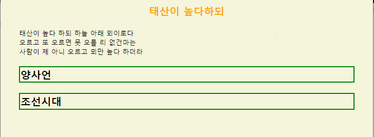
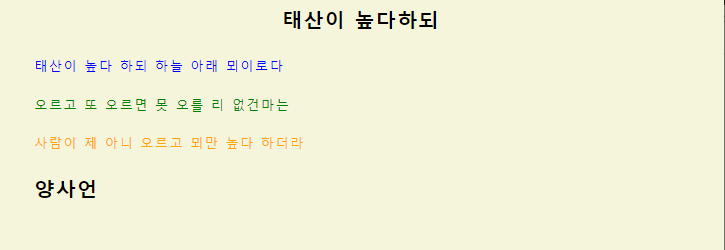
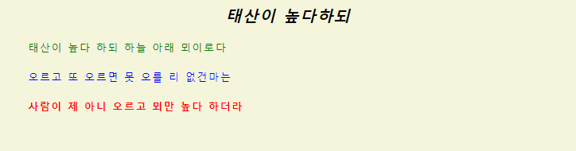
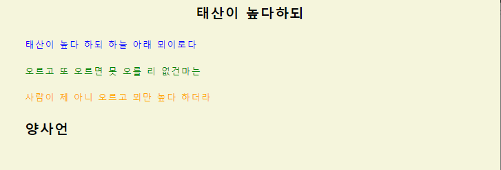
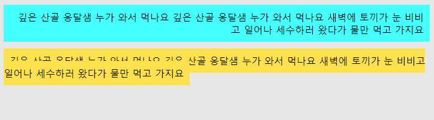
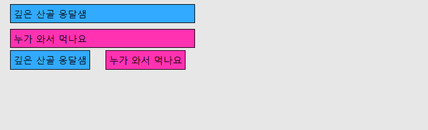
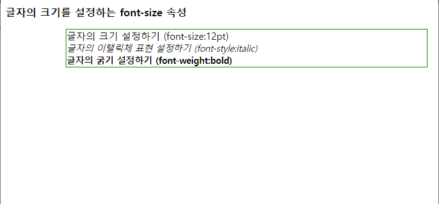
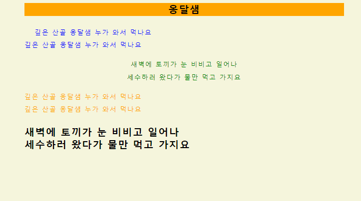

1. 스타일 시트 ① 스타일시트를 사용하는 이유 글자의 크기 조절 자간과 행간을 원하는 대로 조절 특정 텍스트에만 배경색 설정 하이퍼텍스트 링크의 색상과 모양 설정 문단에 여백과 테두리 설정 문단의 배경색과 배경이미지 다양하게 설정 페이지를 좀더 빠르고 작게 구성 웹페이지의 구조를 본문의 내용과 분리 가능 많은 문서를 한꺼번에 수정하고 관리 브라우저의 플랫폼과 무관하게 적용 ② 스타일시트 <html> <head> <title>스타일시트</title> <style type="text/css"> body {font-size:10pt; margin-left:5%; margin-right:5%; background-color:beige;} h3 {color:orange; font-size:15pt; font-weight:bold; text-align:center;} p {font-size:15pt; font-weight:bold; border:solid green; border-width:2pt;} </style> </head> <body> <h3>태산이 높다하되</h3> 태산이 높다 하되 하늘 아래 뫼이로다<br> 오르고 또 오르면 못 오를 리 없건마는<br> 사람이 제 아니 오르고 뫼만 높다 하더라<br> <p> 양사언<br> <p> 조선시대 </body> </html> HTML 적용 시  기본 구조 : 선택자{속성 : 스타일값;} 선택자 스타일 정보를 할당할 대상, 선언부에서 지정하는 내용이 선택자에 영향을 미친다. 선언부에서 지정하는 스타일의 내용과 HTML문서를 연결 모든 HTML 요소들을 선택자로 사용가능 선택자가 태그라면 해당 태그의 영향을 받는 모든 요소에 해당 스타일 적용 위치 : 문서의 헤더에 삽입 필요한 태그(style, /style) : 해당 페이지에 적용할 스타일 모아 헤더 부분에 삽입 스타일 구문 : style 태그안에 어떤 구문으로 스타일 정의하는지 지정 ③ 클래스 스타일 : 헤더에 정의 <html> <head> <title> 클래스 스타일 </title> <style type="text/css"> body {letter-spacing:1pt; line-height:160%; margin-left:5%; margin-right:5%; background-color:beige;} h1{color:green;font-style:italic;text-align:center;} h2,h3,h4 {font-size:15pt; font-weight:bold; text-align:center;} p {font-size:10pt;} p.a {color:blue} p.b {color:green} p.c {color:orange} p.d {font-size:15pt; font-weight:bold;} </style> </head> <body> <h3>태산이 높다하되</h3> <p class="a">태산이 높다 하되 하늘 아래 뫼이로다</p> <p class="b">오르고 또 오르면 못 오를 리 없건마는</p> <p class="c">사람이 제 아니 오르고 뫼만 높다 하더라</p> <p class="d">양사언</p> </body> </html> HTML 적용 시  class 속성 사용하면 기존에 정의되어 있는 스타일 무시 스타일 시트에서 해당 태그의 스타일 정의하기 위해 태그이름 뒤에 .을 찍고 클래스 이름 명시 클래스는 해당 상위 요소로부터 속성값 상속 받는다. p.a : p태그에만 사용, 텍스트를 파란색으로 지정 p.b : p태그에만 사용, 텍스트를 녹색으로 지정 p.c : p태그에만 사용, 텍스트를 오렌지색으로 지정 p.d : p태그에만 사용, 텍스트를 15pt 볼드체로 지정 ④ 클래스 스타일 : 문서에 해단 태그에 정의 <body style="font-size:11pt"> <h2 style="font-style:italic">태산이 높다하되</h2> <p style="color:green">태산이 높다 하되 하늘 아래 뫼이로다</p> <p style="color:blue">오르고 또 오르면 못 오를 리 없건마는</p> <p style="color:red;font-weight:bold">사람이 제 아니 오르고 뫼만 높다 하더라</p> </body> HTML 적용 시  ⑤ 클래스 스타일 : 외부 파일로 지정 myStyle.css body {letter-spacing:1pt; line-height:160%; margin-left:5%; margin-right:5%; background-color:beige;} h1{color:green;font-style:italic;text-align:center;} h2,h3,h4 {font-size:15pt; font-weight:bold; text-align:center;} p {font-size:10pt;} p.a {color:blue} p.b {color:green} p.c {color:orange} p.d {font-size:15pt; font-weight:bold;} main.html <html> <head> <title>외부 스타일 시트</title> <link rel="stylesheet" type="text/css" href="myStyle.css"> </head> <body> <h3>태산이 높다하되</h3> <p class="a">태산이 높다 하되 하늘 아래 뫼이로다</p> <p class="b">오르고 또 오르면 못 오를 리 없건마는</p> <p class="c">사람이 제 아니 오르고 뫼만 높다 하더라</p> <p class="d">양사언</p> </body> </html> HTML 적용 시  외부 스타일 사용하는 이유 다양한 문서들에 동일한 스타일 시트 적용시 한 사이트 내에서 전체적인 스타일을 일관성 있게 적용시 간단한 수정 작업으로 다수 페이지 수정시 예) link rel="stylesheet" type="text/css" herf="주소" rel="stylesheet" : limk 태그로 연결할 화일과 현재 화일의 관계 지정 type="text/css" : link 태그로 연결할 화일의 형식 지정 herf="주소" : link 태그로 연결할 스타일 시트 화일의 위치 지정 ⑥ <div></div> <span></span> <!DOCTYPE HTML> <html> <head> <meta charset="UTF-8"> <title>옹달샘</title> <style type="text/css"> body {background-color: #e7e7e7; } #div1 {background-color: #46FFFF; padding: 10px; } #span1 {background-color: #FFE150; padding: 10px; } </style> </head> <body> <div id="div1" align="right";> 깊은 산골 옹달샘 누가 와서 먹나요 깊은 산골 옹달샘 누가 와서 먹나요 새벽에 토끼가 눈 비비고 일어나 세수하러 왔다가 물만 먹고 가지요 </div><br/> <span id="span1"> 깊은 산골 옹달샘 누가 와서 먹나요 깊은 산골 옹달샘 누가 와서 먹나요 새벽에 토끼가 눈 비비고 일어나 세수하러 왔다가 물만 먹고 가지요 </span> </body> </html> HTML 적용 시  <div>는 박스 형태로 영역이 설정되고 그 안에 정렬, width, height, align <span>은 줄 단위로 영역이 설정, inline 속성으로 width, height, align 설정불가 <!DOCTYPE HTML> <html> <head> <meta charset="UTF-8"> <title>CSS 속성</title> <style type="text/css"> body { background-color: #e7e7e7; } div { width: 300px; height: 20px; border: 1px solid; padding: 5px; margin: 10px; } #div1 {background-color: #32AAFF;} #div2 {background-color: #FF32B1;} span { width: 300px; height: 20px; border: 1px solid; padding: 5px; margin: 10px; } #span1 {background-color: #32AAFF; padding: 5px;} #span2 {background-color: #FF32B1;} </style> </head> <body> <div id="div1">깊은 산골 옹달샘</div> <div id="div2">누가 와서 먹나요</div> <span id="span1">깊은 산골 옹달샘</span> <span id="span2">누가 와서 먹나요</span> </body> </html> HTML 적용 시  <div>는 줄바꿈이 적용되어 아래로 정렬 <span>은 옆으로 정렬 2. 스타일 시트 속성 ① 글꼴 지정 : font_family <style type="text/css"> h1{font-family:serif,sans-serif,"Comic Sans MS",'CG Times"} </style> <p style="font-family:monospace">monospace font family</p> font_family 속성 : 글꼴의 종류 지정 여러개의 글꼴 사용 - 해당 글꼴이 없는 사용자에게 유용 순서대로 해당 글꼴이 클라이언트 컴퓨터에 존재하는지 찾는다. ② 글자의 모양과 크기 지정 : 모양(font_weight, font_style), 크기(font_size) <html> <head> <title>글자의 크기와 모양 설정</title> <style type="text/css"> body {font-size:11pt} p {border:solid green; border-width:1pt; margin-left:100px; margin-right:10px} </style> </head> <body> <h3>글자의 크기를 설정하는 font-size 속성</h3> <p> <span style="font-size:12pt">글자의 크기 설정하기 (font-size:12pt)</span><br> <span style="font-style:italic">글자의 이탤릭체 표현 설정하기 (font-style:italic)</span><br> <span style="font-weight:bold">글자의 굵기 설정하기 (font-weight:bold)</span><br> </p> </body> </html> HTML 적용 시  font_weight 속성 - 글자의 굵기 지정 종류 : normal, bold, bolder, lighter bolder, lighter은 기존에 지정된 글꼴 기준 normal, bold은 절대값으로 굵기 지정 font_style 속성 - 글자의 이탤릭체 지정 종류 : normal, italic, oblique font_size 속성 - 글자의 크기 지정 절대 크기 키워드 : xx_small, x-small, small, medium, large, x-large, xx-large 상대 크기 키워드 : larger, smaller 길이 단위 키워드 : px(픽셀), cm, pt(포인트, 1pt=1/72인치) 백분율(%) 표시 ③ 글자 간격 줄 간격 지정 : letter-spacing(글자 간격), line-height(줄 간격) 문단 여백 지정 : margin-left(왼쪽 여백), margin-right(오른쪽 여백) 텍스트 위치 지정 : text-align 들여쓰기 지정 : text-indent 배경색과 배경이미지 지정 : background-color(배경색), background-image(배경이미 지) <html> <head> <title> 클래스 스타일 </title> <style type="text/css"> body {letter-spacing:1pt; line-height:160%; margin-left:50px; margin-right:5%; background-color:beige;} h3 {font-size:15pt; font-weight:bold; text-align:center; background-color:orange;} p {font-size:10pt;} p.a {color:blue; text-indent:20px;} p.b {color:green; text-align:center;} p.c {color:orange; background-image:url(sample.jpg);background-repeat:no-repeat;} p.d {font-size:15pt; font-weight:bold;} </style> </head> <body> <h3>옹달샘</h3> <p class="a">깊은 산골 옹달샘 누가 와서 먹나요<br> 깊은 산골 옹달샘 누가 와서 먹나요</p> <p class="b">새벽에 토끼가 눈 비비고 일어나<br> 세수하러 왔다가 물만 먹고 가지요</p> <p class="c">깊은 산골 옹달샘 누가 와서 먹나요<br> 깊은 산골 옹달샘 누가 와서 먹나요</p> <p class="d">새벽에 토끼가 눈 비비고 일어나<br> 세수하러 왔다가 물만 먹고 가지요</p> </body> </html> HTML 적용 시  letter-spacing 속성 h1{letter-spacing:1px} p{letter-spacing:normal} line-height 속성(normal, 길이단위, 백분율(%) 사용) p{line-height:normal} p{font-size:10pt;line-height:15pt} = p{font-size:10pt;line-height:150%} text-align 속성 : left, right, center p, h1, div에만 적용 p 태그 영향 받는 문단의 첫줄을 5픽셀 들여쓰기 p{text-indent:5px} p 태그 영향 받는 문단의 첫줄을 브라우저 너비의 10%만큼 들여쓰기 p{text-indent:10%} 배경 이미지 넣기 background-image:url(sample.jpg); 배경 이미지 반복 background-repeat:no-repeat; repeat : 배경이미지를 수평과 수직으로 반복 repeat-x : 배경이미지를 왼쪽에서 오른쪽으로 반복 repeat-y : 배경이미지를 위에서 아래로 반복 no-repeat : 배경이미지를 반복하지 않는다. ④ 이미지의 절대 위치 지정 <html> <head> <title>절대 위치 지정하기</title> <style type="text/css"> #image1 {position:absolute; top:100px; left:150px; z-index:0} #image2 {position:absolute; top:130px; left:320px; z-index:1} </style> </head> <body> <div id="image1"><img src="sample.jpg"></div> <div id="image2"><img src="sample.jpg"></div> </body> </html> HTML 적용 시 # : 스타일 시트에서 ID 선택자에 대한 스타일 정의시 사용 position : 대상의 위치가 절대위치(absolute)인가 상대위치(relative)인가 지정 top, left : 왼족 상단 기준으로 객체의 위치 지정 z-index : 절대 위치를 가지는 객체들이 겹칠 때 속성의 값이 큰 개체가 위에 위치 ⑤ CSS의 overflow 요소내의 컨텐츠가 너무 커서 요소내에 모두 보여주기 힘들때 그것을 어떻게 보여줄지를 지정 기본적으로 컨텐츠를 포함하고 있는 요소의 크기가 고정되어 있지 않다면 컨텐츠를 모두 포함할 수 있도록 요소의 크기가 커짐 크기가 고정 되어 있다면 overflow 프로퍼티에 지정된 값에 따라 보여짐 visible : 넘칠 경우 컨텐츠가 상자 밖으로 보여집니다.(기본 값입니다. ) hidden : 넘치는 부분은 잘려서 보여지지 않습니다. scroll : 스크롤바가 추가되어 스크롤할 수 있습니다.(가로, 세로 모두 추가 됩니다.) auto : 컨텐츠 량에 따라 스크롤바를 추가할지 자동으로 결정